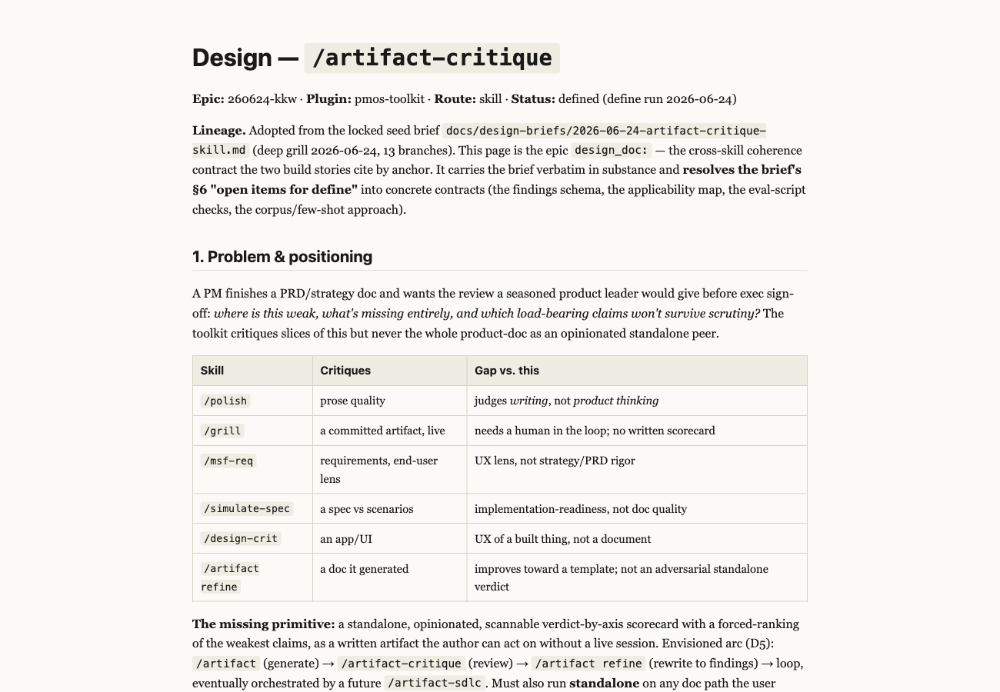
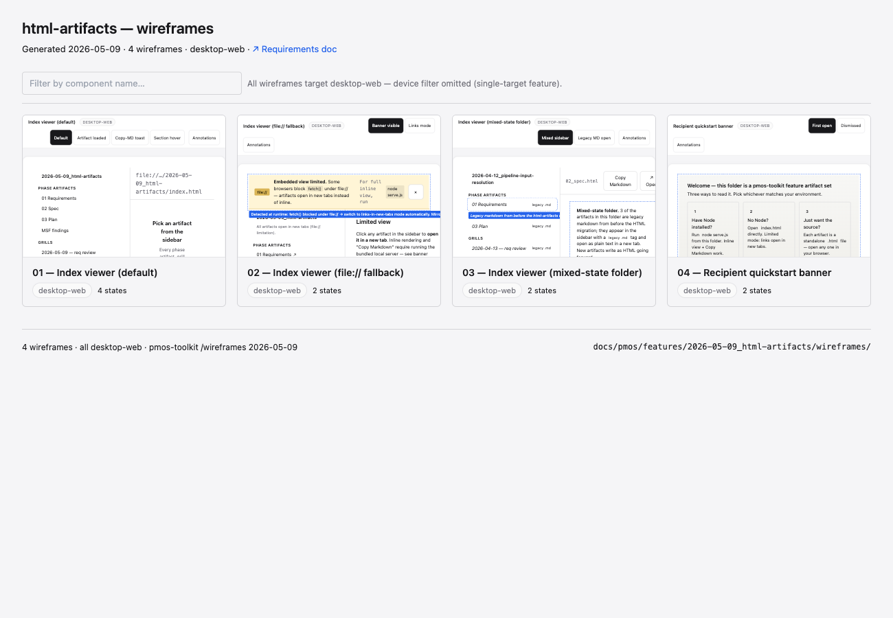
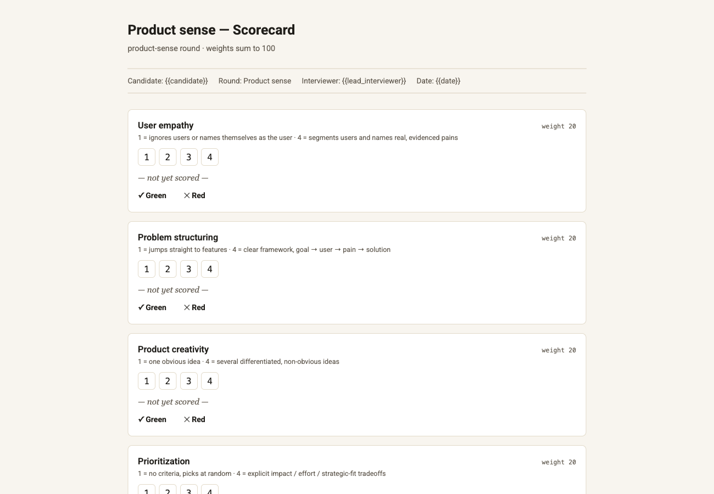
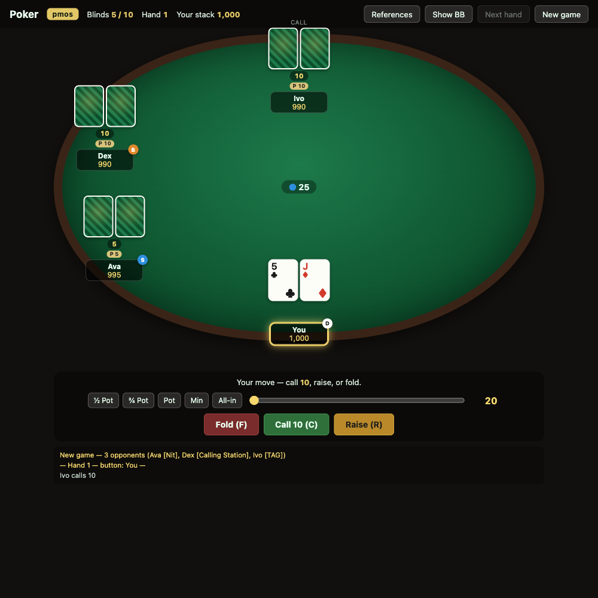
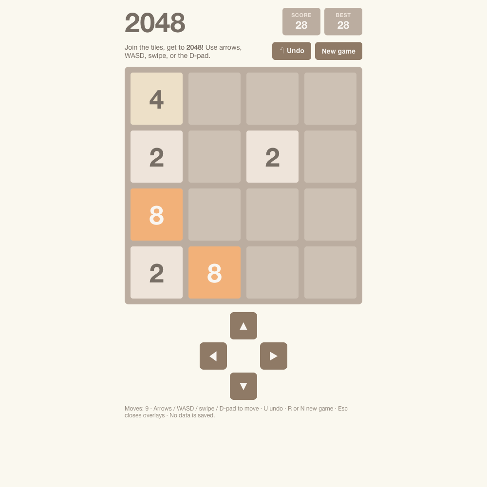

pmos-skills is a marketplace of 60 skills across 5 plugins. Each one produces a real, openable artifact — and the delivery pipeline argues back before anything ships.
Who it's for: the founding PM going from napkin sketch to MVP, the product lead who needs spec clarity before five engineers start, the solo full-stack dev who's great at code but bad at the messy middle. 41 skills spanning discovery, design, validation, authoring, and release.
Each stage is standalone — invoke any one at any point. Or let /feature-sdlc run the chain for you, auto-tiering by scope and persisting resumable state in a git worktree.
Most AI tooling agrees with you. These passes argue back — surfacing the problems before they reach code. Here's what /grill actually does:
Not a wall of chat — a polished, self-contained HTML document you can review, comment on, and ship. These were all generated by toolkit skills during this repo's own development:

⤢ click to enlarge
⤢ click to enlargeWho it's for: the senior PM ramping on usage-based pricing before tomorrow's exec pitch; the new EM building PM literacy in three weeks; the founder entering a domain they've never shipped in. Where the toolkit is for building, learnkit is for learning first — input, not output.
Two tracks: PM tactics (the craft) and cross-functional (the things you partner with). Ten areas, and you can generate any topic that isn't here yet.
Generated from the 61 primer files that ship in the repo — not a wishlist.
Who it's for: the hiring manager or lead interviewer who needs a defensible record after an interview round. The first skill is /interview-feedback; team reviews, 1:1 prep, and calibration land here over time.
Drop in a recording (transcribed locally), interviewer notes, and the role's scorecard. You get back:

Who it's for: the builder mid-deep-work who needs a hard context-switch that won't distract — no login, no notifications, no save state. Seven self-contained games, each launched from a skill and served offline from a tiny local server.


Who it's for: anyone running the kit. These aren't part of a feature pipeline or a learning artifact — they're the meta-tools you reach for to keep your machine, and the skills themselves, in good shape.
Most AI tooling over-promises and quietly hallucinates. pmos-skills builds the skeptic into the workflow — so the output survives contact with reality. There are no testimonials on this page, because none have been collected yet; we'd rather show you the rigor than borrow credibility we don't have.
/grill interviews you on shaky assumptions; /msf-req and /msf-wf simulate user friction; /simulate-spec pressure-tests the design before a line of code.
Learnkit fetches every link and claim this run — if it wasn't fetched, it doesn't ship. The interview scorecard refuses any rating without a verbatim quote behind it.
Games, primers, frameworks, specs — and this very page — are self-contained HTML that open from file://. No CDN, no account, no telemetry.
Each plugin versions and installs independently — take only what you need. Smoke test on a fresh install: run /pmos-toolkit:mytasks or /pmos-toolkit:backlog — both work with zero prior setup.